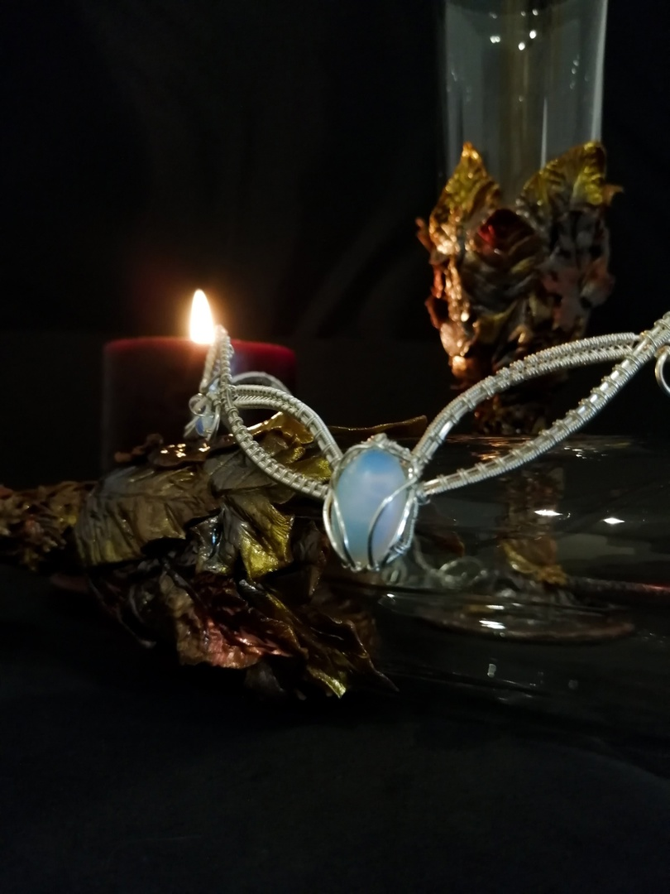
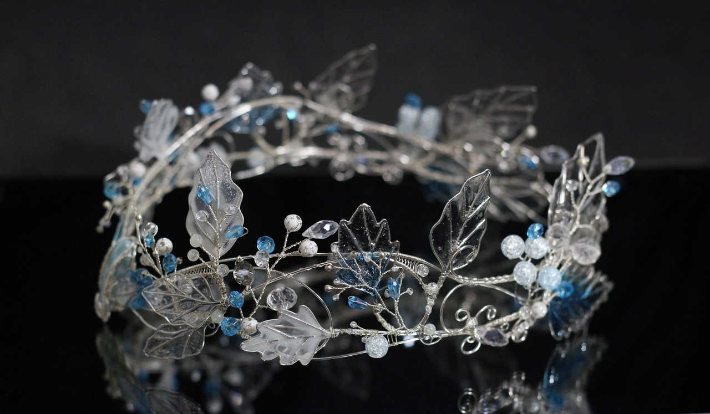
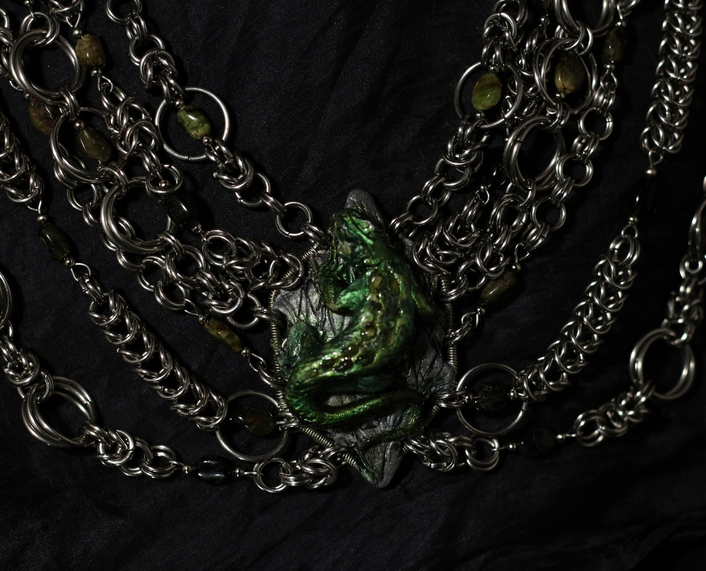

До курса, в целом, неплохо было с ярмарками, заказы тоже были. Осенью 21, прям подряд случилось 3 или 4 совершенно провальных ярмарки подряд. Сейчас имеет в среднем 3-5 заказов в месяц. Учитывая, что проходя курс, ещё и цены поднял, то в среднем тот же полтинник выходит, но только без сумасшедшего объёма крафта, без покатушек на ярмарки.
В этой статье история Лаикалассе Аикалиндо, эльфиские украшения, Москва.
— Первое, расскажи, что было до курса, какой средний доход был в месяц? Сколько клиентов?
— До курса я в целом неплохо пробавлялся ярмарками, заказы тоже были, причём на ярмарки я стал активно ездить с осени 20 года и был в общем доволен.
Клиентов через Вк даже и не считал, но их было немного.
Осенью 21, у меня прям подряд случилось три или 4 совершенно провальных ярмарки подряд, и вот тут начала наступать жопа. Я надеялся, что ну ладно, дотянем на одном крыле до новогодних, там 14 февраля, потом 23, а там и март, и вылезу.
Нооо.... В феврале 22 случилось СВО, и по итогам весь 22 год полетел просто в такую звезду, что я до сих пор удивляюсь, как я его пережил. С ярмарок+ заказами до всей жопы было точно больше 50 к в месяц, нормальный такой средний доход. Без излишеств, но и не умирал с голоду.
К моменту обучения у Суровых - дай бог, один-два заказа в месяц и то не в каждый. Это правда была жесть.
— Какие сложности были во время обучения на нашем курсе? Насколько сложно было учиться? За сколько прошёл обучение?
— Самое сложное было в начале. Аналитика ЦА, описание своей вот этой ЦА, вот там мозг просто перегрелся и расплавился.
А в целом, учиться было несложно. Всё очень понятно, очень доступно, ну если головой читать, а не жопой.
Обучение я проходил медленно, потому что пошла работа. Делаешь, чему учат - люди идут- учиться резко некогда. Поэтому полз долго, месяцев 8, наверное.
Долго с рекламой возился ещё, с тестами. Прямо до отчаянья доходило, не работет и хоть тресни. Писал тексты десятками, настройки крутил и так и сяк, картинки выбирал, в общем несколько месяцев упарывался, пока не выстрелило.

— Напомни, пожалуйста, самостоятельно проходил курс или с куратором?
— Всё сам. Ну и чатик же:)))
— Ок, есть. Как считаешь, с куратором было бы повеселее?
— Я думаю, да. Какие-то затыки гораздо удобнее в две головы решать, чем в одну. Но и в одну можно:)
— Можно, без сомнений) Какие сейчас действия делаешь для привлечения клиентов? Как часто пишешь посты? Запускаешь ли рекламу?
— Рекламу, сейчас конкретно, запускаю довольно редко, пишу посты регулярно. Обычно ежедневно, но сейчас, когда комп накрылся, раз в два-три дня. Вот в январе, думаю, рекламу пустить.
Да, у меня неплохо работает анкета и я упорно осваиваю рассылку.
— А можешь поделиться, как изменилась жизнь, когда увеличился доход? Может что-то купил себе? Съездил в путешествие? Что-то смог сделать, чего раньше не мог позволить себе)
— Нет, из этого пока ничего, но мне более-менее удалось выравнять доходы и они хотя бы есть!
В хороший месяц может и под соточку, в плохой ну... 30 где-то.
Но они есть и это уже круто!
— Сколько сейчас зарабатываешь? Сколько в среднем в месяц? Сколько клиентов? А вот примерно сколько за год было прошедший заработано?
— Сейчас у меня в среднем 3-5 заказов в месяц. Учитывая, что проходя курс, я ещё и цены поднял, то в среднем тот же полтинник и имею, но только без сумасшедшего объёма крафта, без покатушек на ярмарки.
Я хоть жизнь начал видеть:))

— Уже хороший поворот. Как тебе жизнь?) Лучше прежней?)
— Однозначно, лучше, но, однозначно, есть куда расти.
— Ну куда расти, всегда есть) А что тебя убедило в том, что стоит идти к нам учиться?
— Первые результаты с вк лайт и то, что там было полезно, а не развод трёх капель ценной инфы на океан воды.
— То есть, тебе важно было убедиться, что инфа работает, на своей шкуре, чтоб пойти на большое обучение?
— Конечно!
— Понимаю) А как думаешь, были бы твои результаты лучше, если бы ты курс проходил с куратором?
— Не, не думаю. Я думаю, что мне просто надо в очередной раз сесть, запустить рекламу, и работать.
— То есть, при вдумчивом изучении, курс достаточно подробный и понятный, чтоб самостоятельно добиться хороших результатов?
— Именно. Я считаю свои результаты отличными просто, на самом деле. Щас по идее стряхнуть ряд стресс-факторов, стряхнуть лишние траты, так вообще огонь будет.

— Это очень здорово) А что бы ты посоветовал ремесленникам, которые сомневаются, идти ли к нам учиться?
— Я бы им цитировал Джобса, кажется, ну, или интепретацию тех же слов Тёмой Лебедевым: нахера вам мотивация? Сидите в жопе!
А если серьёзно – идти на вк лайт, поучиться там, применить (это важно) полученные там знания и идти на большой курс.
— Отличная тема, мы тоже так думаем))) Спасибо большое, что пообщался)) Это было здорово)
— Всегда пожалуйста! Да пребудут с вами адекватные ученики:))